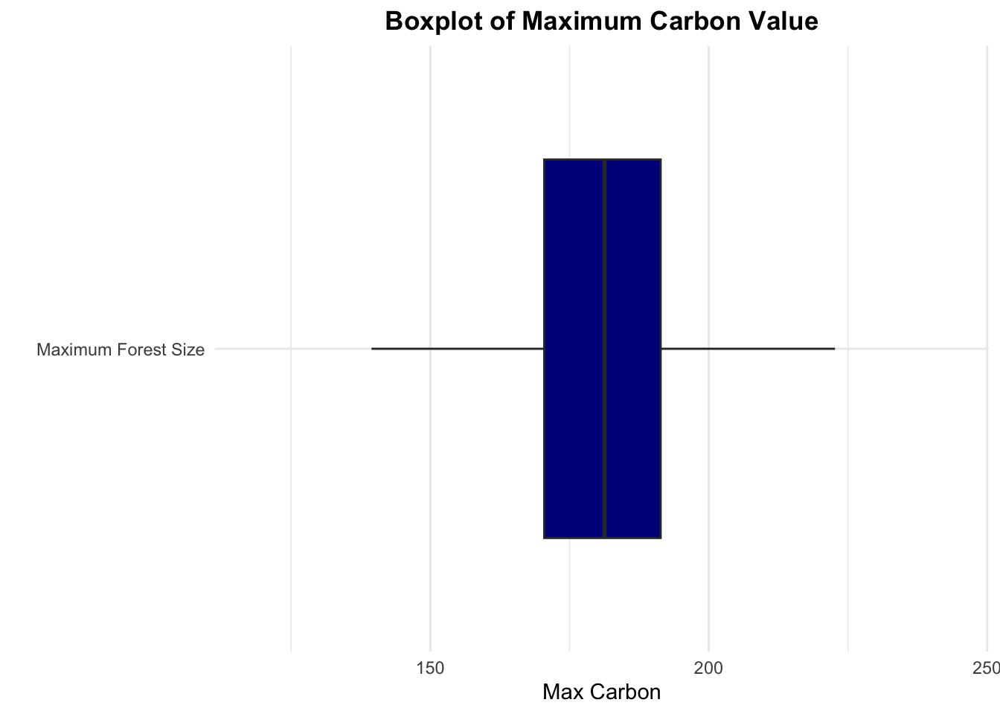

In this post, I perform a Sobol sensitivity analysis with an ODE (ordinary differential equation). This analysis is derived from an assignment for EDS230: Modeling Environmental Systems, as part of the curriculum for UCSB’s Master’s of Environmental Data Science program.
Sobol sensitivity analysis is a variance-based approach designed to efficiently sample a parameter space. Sobol quantifies sensitivity by breaking variance outputs into several indices, which are computed using parameter-output variance relationships. These indices include:
First Order Sensitivity (Main Effect): variance associated directly with parameter alone
Total Effect: variance associated with parameter and interaction with other parameters
Second Order Indices: quantification of how parameter pair-wise parameter interactions contribute to output variation
In this example, we consider the following model of forest growth (where forest size is measures in units of carbon (C)):
dC/dt = r ⋅ C for forests where C is below a threshold canopy closure
dC/dt = g ⋅ (1 - C/k) for forests where carbon is at or above the threshold canopy closure and K is a carrying capacity in units of carbon
The size of the forest (C), canopy closure threshold and carrying capacity are all in units of carbon. We think of the canopy closure threshold as the size of the forest at which growth rates change from exponential to linear, and we observe r, as early exponential growth rate and g as the linear growth rate once canopy closure is reached.
Implementing the Model
We begin the sensitivity analysis by implementing the model as a differential equation.
code
# carbon model# c = forest size in measured in units of carbon# ct = canopy threshold# r = exponential growth rate# g = linear growth rate at canopy closure# k = carrying capacitycarbon_model <-function(Time, c, params) {ifelse(c < params$ct, delta <- params$r * c, delta <- params$g * (1- (c/params$k)))return(list(delta))}
Running the Model with Set Parameters
Once the model is implemented, we run the model for 300 years using given parameters, where there is no uncertainty. We begin with an initial forest size of 10 kg/C and the following parameters:
canopy closure threshold of 50 kgC
K = 250 kg C (carrying capacity)
r = 0.01 (exponential growth rate before canopy closure)
g = 2 kg/year (linear growth rate after canopy closure)
code
# initial forest sizec_init <-10# assignment of inital perametersparam <-list(ct =50,k =250,r =0.01,g =2)# 300 year simulation timesimtimes <-seq(from=1, to=300)
We utilize the ODE solver to run the model for 300 years
code
# ODE solver implementationresult <-ode(times = simtimes, y =c(c = c_init), func = carbon_model, parms = param)# column renamingcolnames(result) <-c("time","carbon")# store results as a data frameresult <-as.data.frame(result)
and then graph the trajectory results.
code
# graphing results ggplot(data = result, mapping =aes(x = time, y = carbon)) +geom_point(color ="darkblue", size =3, alpha =0.6) +labs(title ="Carbon Levels Over Time",x ="Time",y ="Carbon",caption ="Source: Your data source") +theme_minimal() +theme(plot.title =element_text(face ="bold", hjust =0.5),axis.title =element_text(face ="bold"),plot.caption =element_text(hjust =1))
Running a Sobol Global
After we have run the model with given parameters, we run a sobol global sensitivity analysis, varying all parameters at the same time. This will help us to explore how the estimated maximum forest size varies within the parameters:
pre-canopy closure growth rate (r)
post-canopy closure growth rate (g)
canopy closure threshold and carrying capacity (K)
For this exercise, we assume that parameters are all normally distributed with means as given in initial parameters and standard deviation of 10% of the mean value.
# function to return max carbon compute_max =function(results) { max_carbon = results$carbon[300]return(list(max_carbon = max_carbon))}# function for ODEsolvecarbon_wrapper <-function(c_initial, ct, k, r, g, simtimes, func) { parms =list(ct=ct, k=k, r=r, g=g) results =ode(y= c_initial, times= simtimes, func= func, parms= parms)colnames(results) =c("time","carbon") metrics =compute_max(as.data.frame(results))return(metrics)}
code
allresults =as.data.frame(sens_carbon$X) %>%pmap(carbon_wrapper, c_initial=c_init, simtimes=simtimes, func=carbon_model)#take the results out of the list allres = allresults %>%map_dfr(`[`,c("max_carbon"))
We graph the results of the sensitivity analysis as a boxplot of maximum forest size and record sobol indices S and T.
code
# box plot of max carbonggplot(data = allres, aes(x ="Maximum Forest Size", y = max_carbon)) +geom_boxplot(fill ="darkblue", outlier.shape =NA) +labs(title ="Boxplot of Maximum Carbon Value",y ="Max Carbon",x ="") +theme_minimal() +theme(plot.title =element_text(face ="bold", hjust =0.5),axis.title.y =element_text(face ="bold"),plot.caption =element_text(hjust =1)) +coord_flip()

code
# record the indicessens_carbon_maxcarbon = sensitivity::tell(sens_carbon,allres$max_carbon)# First-order indices tablefirst_order_indices <- sens_carbon_maxcarbon$Srownames(first_order_indices) <-c("ct", "k", "r", "g") # Rename rows with variable nameskable_first_order <-kable(first_order_indices, caption ="First-Order Indices") %>%kable_styling("striped", full_width =FALSE) # Total sensitivity index tabletotal_sensitivity_index <- sens_carbon_maxcarbon$Trownames(total_sensitivity_index) <-c("ct", "k", "r", "g") # Rename rows with variable nameskable_total_sensitivity <-kable(total_sensitivity_index, caption ="Total Sensitivity Index") %>%kable_styling("striped", full_width =FALSE)# Print the tableskable_first_order
First-Order Indices
original
bias
std. error
min. c.i.
max. c.i.
ct
0.0535712
0.0041386
0.0589892
-0.0559964
0.1613757
k
0.3609487
0.0015147
0.0547030
0.2594734
0.4711013
r
0.3166746
0.0019369
0.0588323
0.1962994
0.4350840
g
0.2003974
0.0028063
0.0532262
0.0877141
0.3037629
code
kable_total_sensitivity
Total Sensitivity Index
original
bias
std. error
min. c.i.
max. c.i.
ct
0.0559747
0.0005506
0.0060035
0.0428226
0.0667686
k
0.3502126
0.0002552
0.0352006
0.2790502
0.4169600
r
0.3385371
0.0041040
0.0363116
0.2525754
0.3986892
g
0.2256922
0.0015620
0.0240854
0.1751392
0.2664142
Considering the range of parameter variations, a shift exceeding 50% in the maximum carbon levels within the forest becomes apparent. Notably, both the first-order and total sensitivity analyses underscore the significance of the carrying capacity (k) and exponential growth rate (r) as pivotal factors in influencing the extent of variability in maximum carbon levels. Foreseeing the potential impact of climate change on forest dynamics, it is plausible to anticipate alterations in the carrying capacity. For instance, factors such as soil nutrient depletion could curtail the forest’s capacity to support tree growth. In light of this scenario, a corresponding decline in the overall carbon content within forests could be anticipated.
Source Code
---title: "Using Sobol Sensitivity Analysis with an ODE"description: "A sensitivity analysis example modeling forest growth."author: - name: Gabrielle Smith url: https://gabriellensmith.github.io affiliation: MEDS affiliation-url: https://ucsb-meds.github.io/date: 2023-05-22catergories: [MEDS, Modeling, R]image: forest.jpegeditor: visualtoc: truedraft: falseformat: html: code-fold: true code-tools: true code-summary: 'code'---## DescriptionIn this post, I perform a Sobol sensitivity analysis with an ODE (ordinary differential equation). This analysis is derived from an assignment for EDS230: Modeling Environmental Systems, as part of the curriculum for UCSB's Master's of Environmental Data Science program.Sobol sensitivity analysis is a variance-based approach designed to efficiently sample a parameter space. Sobol quantifies sensitivity by breaking variance outputs into several indices, which are computed using parameter-output variance relationships. These indices include:- First Order Sensitivity (Main Effect): variance associated directly with parameter alone- Total Effect: variance associated with parameter and interaction with other parameters- Second Order Indices: quantification of how parameter pair-wise parameter interactions contribute to output variationIn this example, we consider the following model of forest growth (where forest size is measures in units of carbon (C)):*dC/dt = r ⋅ C* for forests where C is below a threshold canopy closure*dC/dt = g ⋅ (1 - C/k)* for forests where carbon is at or above the threshold canopy closure and K is a carrying capacity in units of carbonThe size of the forest *(C)*, canopy closure threshold and carrying capacity are all in units of carbon. We think of the canopy closure threshold as the size of the forest at which growth rates change from exponential to linear, and we observe *r*, as early exponential growth rate and *g* as the linear growth rate once canopy closure is reached. ## Implementing the ModelWe begin the sensitivity analysis by implementing the model as a differential equation.```{r include=FALSE}# packagesrm(list =ls())if ("package:kableExtra"%in%search()) {detach("package:kableExtra", unload=TRUE)}library(tidyverse)library(deSolve)library(sensitivity)library(knitr)library(kableExtra)library(sjPlot)``````{r}# carbon model# c = forest size in measured in units of carbon# ct = canopy threshold# r = exponential growth rate# g = linear growth rate at canopy closure# k = carrying capacitycarbon_model <-function(Time, c, params) {ifelse(c < params$ct, delta <- params$r * c, delta <- params$g * (1- (c/params$k)))return(list(delta))}```## Running the Model with Set ParametersOnce the model is implemented, we run the model for 300 years using given parameters, where there is no uncertainty. We begin with an initial forest size of 10 kg/C and the following parameters:- canopy closure threshold of 50 kgC- *K* = 250 kg C (carrying capacity)- *r* = 0.01 (exponential growth rate before canopy closure)- *g* = 2 kg/year (linear growth rate after canopy closure)```{r}# initial forest sizec_init <-10# assignment of inital perametersparam <-list(ct =50,k =250,r =0.01,g =2)# 300 year simulation timesimtimes <-seq(from=1, to=300)```We utilize the ODE solver to run the model for 300 years```{r}# ODE solver implementationresult <-ode(times = simtimes, y =c(c = c_init), func = carbon_model, parms = param)# column renamingcolnames(result) <-c("time","carbon")# store results as a data frameresult <-as.data.frame(result)```and then graph the trajectory results.```{r}# graphing results ggplot(data = result, mapping =aes(x = time, y = carbon)) +geom_point(color ="darkblue", size =3, alpha =0.6) +labs(title ="Carbon Levels Over Time",x ="Time",y ="Carbon",caption ="Source: Your data source") +theme_minimal() +theme(plot.title =element_text(face ="bold", hjust =0.5),axis.title =element_text(face ="bold"),plot.caption =element_text(hjust =1))```## Running a Sobol Global After we have run the model with given parameters, we run a sobol global sensitivity analysis, varying all parameters at the same time. This will help us to explore how the estimated **maximum forest size** varies within the parameters:- pre-canopy closure growth rate (*r*)- post-canopy closure growth rate (*g*)- canopy closure threshold and carrying capacity (*K*)For this exercise, we assume that parameters are all normally distributed with means as given in initial parameters and standard deviation of 10% of the mean value.```{r}#set base paramsct_base =50k_base =250r_base =0.01g_base =2#set sd multipliersd =0.1#first set of parameter samplesct <-rnorm(mean=ct_base, sd=ct_base*sd, n=300)k <-rnorm(mean=k_base, sd=k_base*sd, n=300)r <-rnorm(mean=r_base, sd=r_base*sd, n=300)g <-rnorm(mean=g_base, sd=g_base*sd, n=300)X1 =cbind.data.frame(ct=ct, k=k, r=r, g=g)#repeat the processct <-rnorm(mean=ct_base, sd=ct_base*sd, n=300)k <-rnorm(mean=k_base, sd=k_base*sd, n=300)r <-rnorm(mean=r_base, sd=r_base*sd, n=300)g <-rnorm(mean=g_base, sd=g_base*sd, n=300)X2 =cbind.data.frame(ct=ct, k=k, r=r, g=g)#mapping to account for negative valuesX1 = X1 %>%map_df(pmax, 0.0)X2 = X2 %>%map_df(pmax, 0.0)#sobol parameterssens_carbon <-sobolSalt(model =NULL, X1, X2, nboot =300)# naming output columns colnames(sens_carbon$X) <-c("ct","k", "r", "g")``````{r}# function to return max carbon compute_max =function(results) { max_carbon = results$carbon[300]return(list(max_carbon = max_carbon))}# function for ODEsolvecarbon_wrapper <-function(c_initial, ct, k, r, g, simtimes, func) { parms =list(ct=ct, k=k, r=r, g=g) results =ode(y= c_initial, times= simtimes, func= func, parms= parms)colnames(results) =c("time","carbon") metrics =compute_max(as.data.frame(results))return(metrics)}``````{r}allresults =as.data.frame(sens_carbon$X) %>%pmap(carbon_wrapper, c_initial=c_init, simtimes=simtimes, func=carbon_model)#take the results out of the list allres = allresults %>%map_dfr(`[`,c("max_carbon"))```We graph the results of the sensitivity analysis as a boxplot of maximum forest size and record sobol indices **S** and **T**.```{r}# box plot of max carbonggplot(data = allres, aes(x ="Maximum Forest Size", y = max_carbon)) +geom_boxplot(fill ="darkblue", outlier.shape =NA) +labs(title ="Boxplot of Maximum Carbon Value",y ="Max Carbon",x ="") +theme_minimal() +theme(plot.title =element_text(face ="bold", hjust =0.5),axis.title.y =element_text(face ="bold"),plot.caption =element_text(hjust =1)) +coord_flip()``````{r}# record the indicessens_carbon_maxcarbon = sensitivity::tell(sens_carbon,allres$max_carbon)# First-order indices tablefirst_order_indices <- sens_carbon_maxcarbon$Srownames(first_order_indices) <-c("ct", "k", "r", "g") # Rename rows with variable nameskable_first_order <-kable(first_order_indices, caption ="First-Order Indices") %>%kable_styling("striped", full_width =FALSE) # Total sensitivity index tabletotal_sensitivity_index <- sens_carbon_maxcarbon$Trownames(total_sensitivity_index) <-c("ct", "k", "r", "g") # Rename rows with variable nameskable_total_sensitivity <-kable(total_sensitivity_index, caption ="Total Sensitivity Index") %>%kable_styling("striped", full_width =FALSE)# Print the tableskable_first_orderkable_total_sensitivity```Considering the range of parameter variations, a shift exceeding 50% in the maximum carbon levels within the forest becomes apparent. Notably, both the first-order and total sensitivity analyses underscore the significance of the carrying capacity (k) and exponential growth rate (r) as pivotal factors in influencing the extent of variability in maximum carbon levels. Foreseeing the potential impact of climate change on forest dynamics, it is plausible to anticipate alterations in the carrying capacity. For instance, factors such as soil nutrient depletion could curtail the forest's capacity to support tree growth. In light of this scenario, a corresponding decline in the overall carbon content within forests could be anticipated.